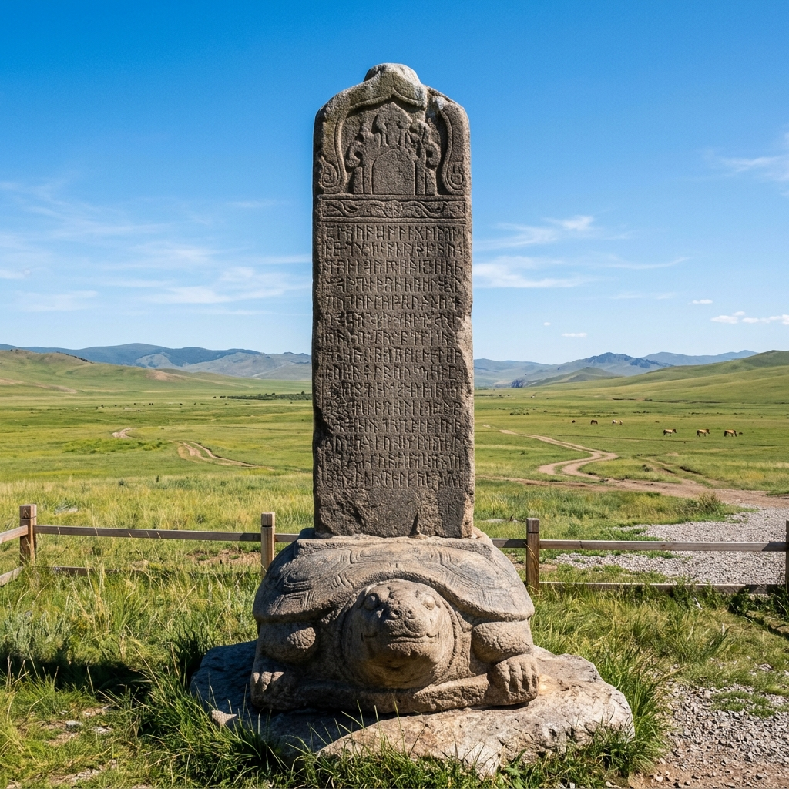
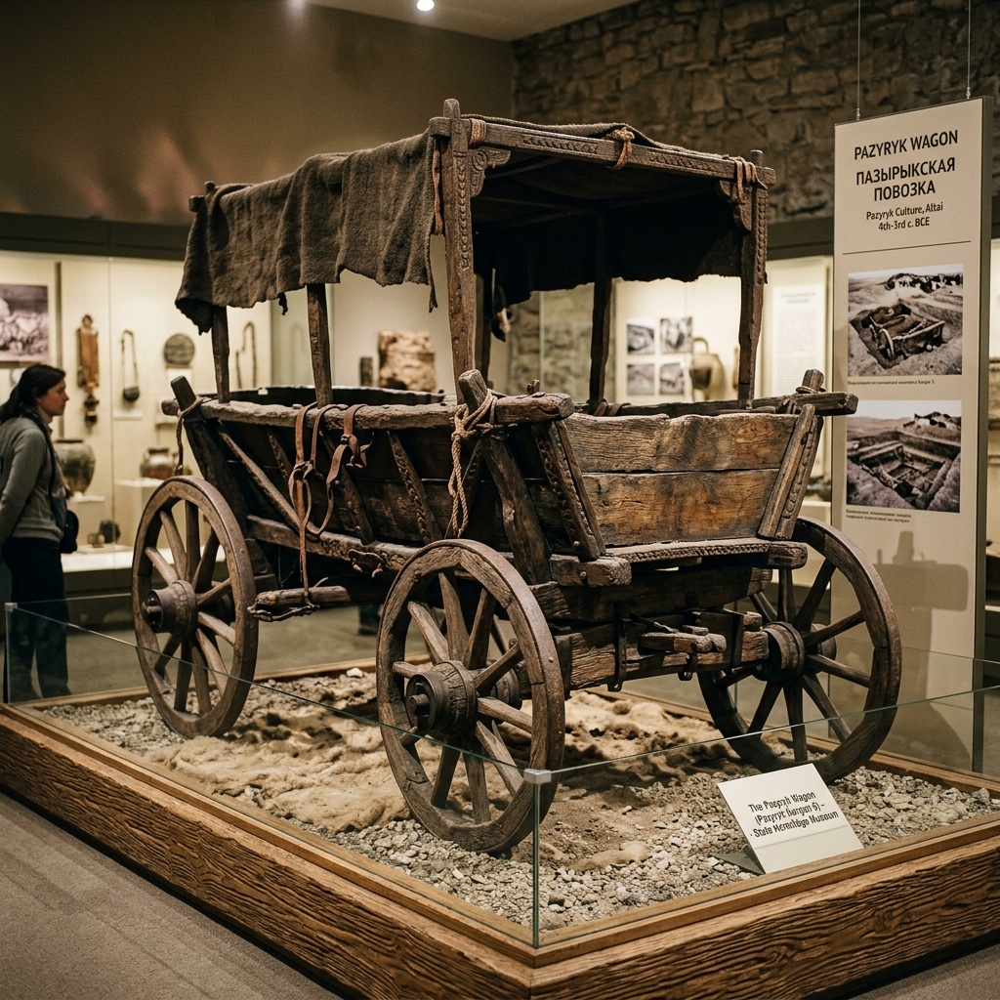
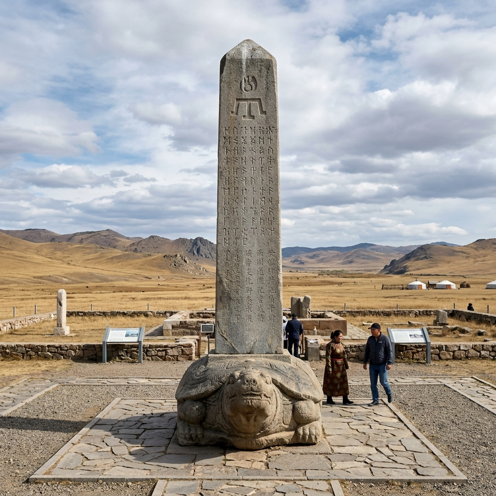
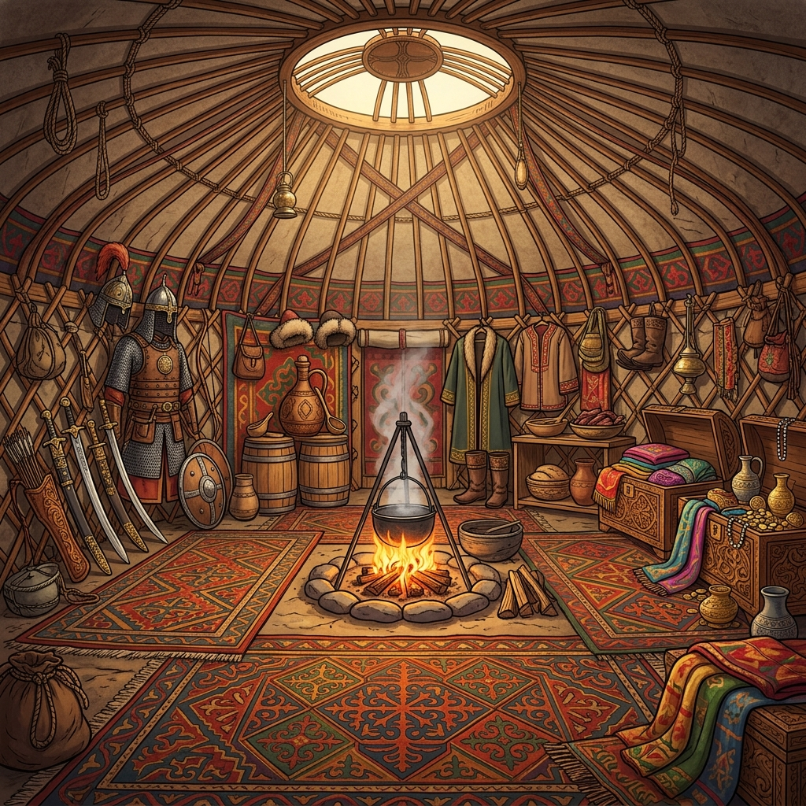
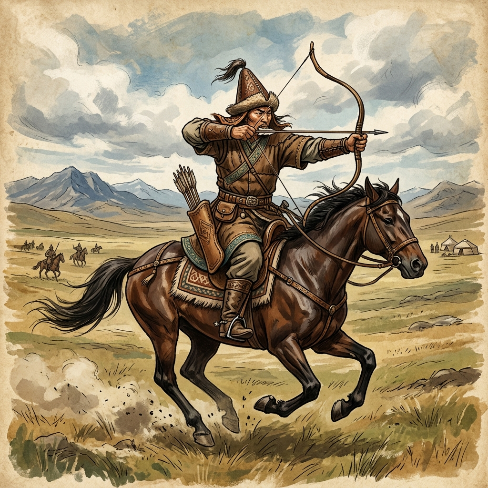

Türklerde Konargöçer Yaşam
Tarihsel kaynaklar, dönem koşulları ve kültürel miras eşliğinde etkileşimli öğrenme yolculuğu.
Öğrenme Çıktısı ve Süreç
TAR.9.2.5. Türklerde konargöçer yaşama ilişkin bakış açısı geliştirebilme
Etkinlik Aşamaları Rehberi
Kaynak Sınıflandırma
Her kaynağı birinci el veya ikinci el olarak sınıflandırın.





Özellik Eşleştirme
Sol taraftaki kavramı seçin, ardından sağ taraftaki uygun açıklamayı seçerek eşleştirin.
🏷️ Kavramlar
📋 Açıklamalar
Neden-Sonuç İlişkisi
Konargöçer yaşamın tarihi nedenlerini inceleyin ve ortaya çıkan tarihsel sonuçları değerlendirin.
Türk Otağında Keşif
Görseldeki parlayan simgeleri keşfederek konargöçer yaşam koşullarını öğrenin.

Obje Başlığı
✓ KeşfedildiObje açıklaması burada görünecek.
Geçmiş ve Günümüz
Kültürel öge kartını basılı tutarak ait olduğu zaman sütununa (Sadece Geçmiş, Sadece Günümüz veya Her İki Dönem) sürükleyip bırakın.
Değer Seçimi ve Bakış Açısı
Konargöçer yaşamı en iyi tanımlayan üç değeri seçin ve kendi bakış açınızı ifade edin.

Türklerde konargöçer yaşam tarzının tarihi ve kültürel önemi hakkındaki düşüncenizi ifade edin:
Keşfinizi Tamamladınız!
Harika bir öğrenme yolculuğu gerçekleştirdiniz! İlettiğiniz cevaplarla Tariat Kitabesi'nden Sarıkeçili Yörüklerine uzanan konargöçer kültürün temel öğelerini pekiştirdiniz.